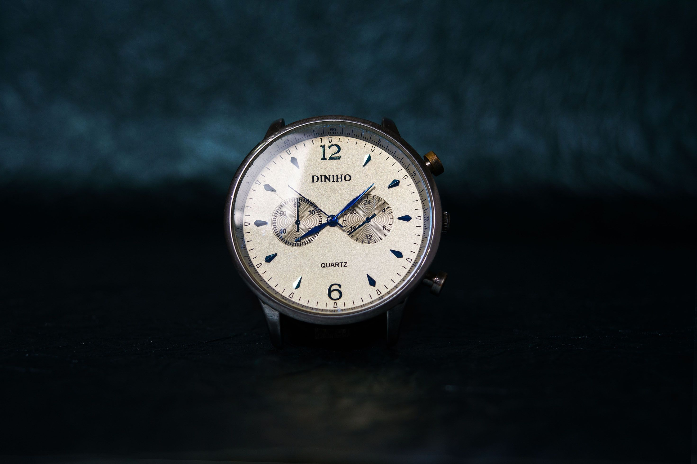
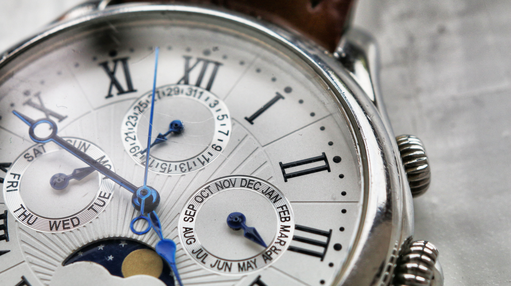
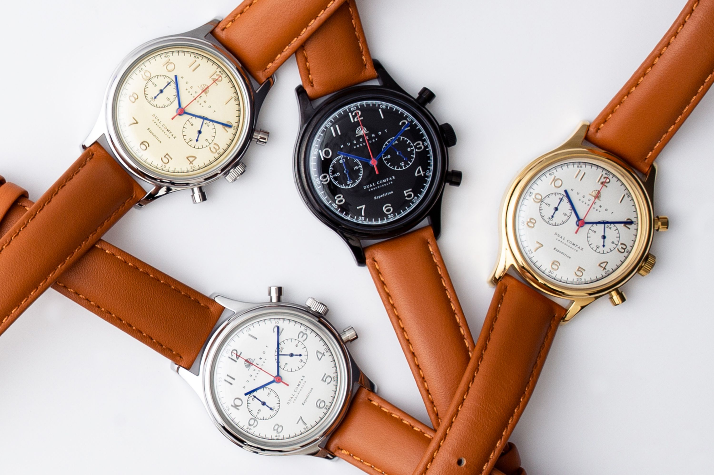
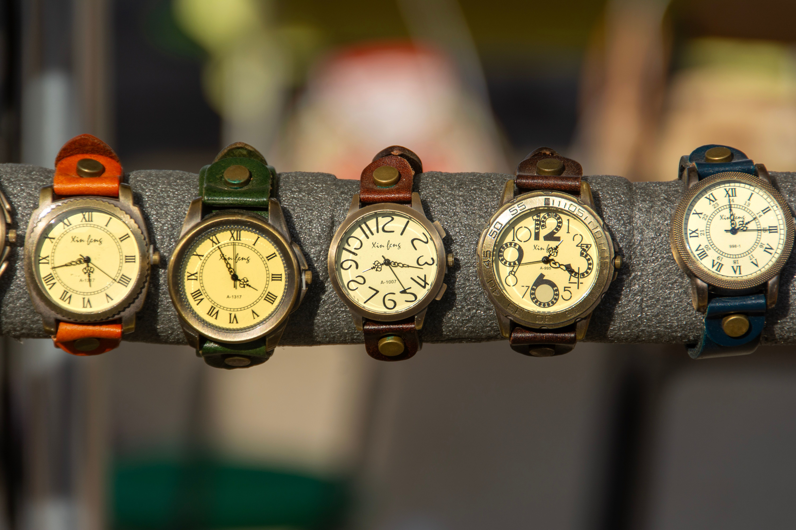
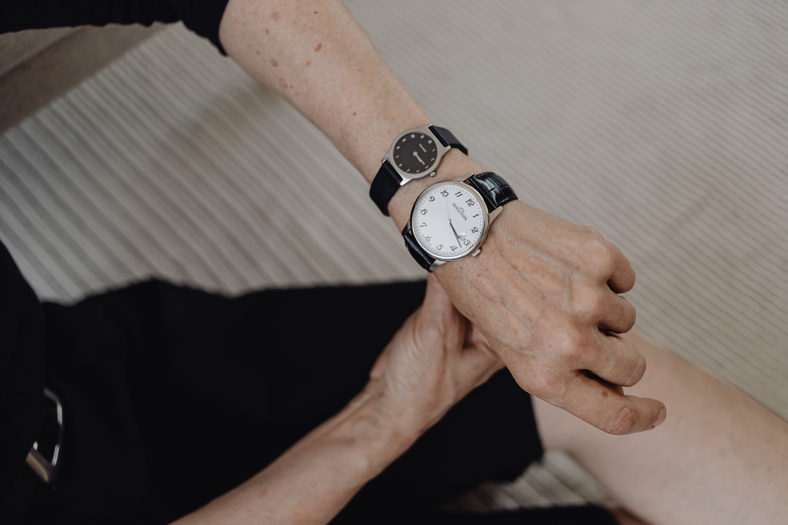
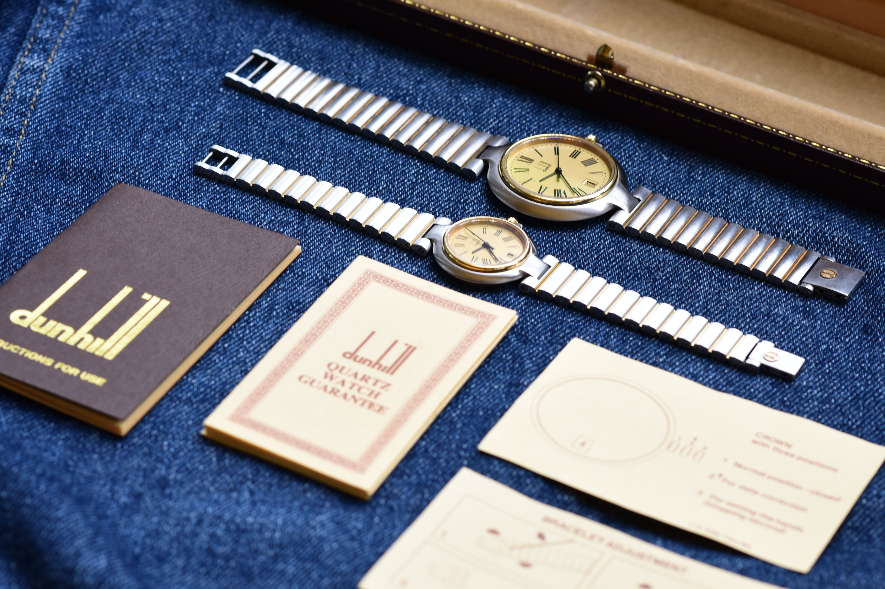
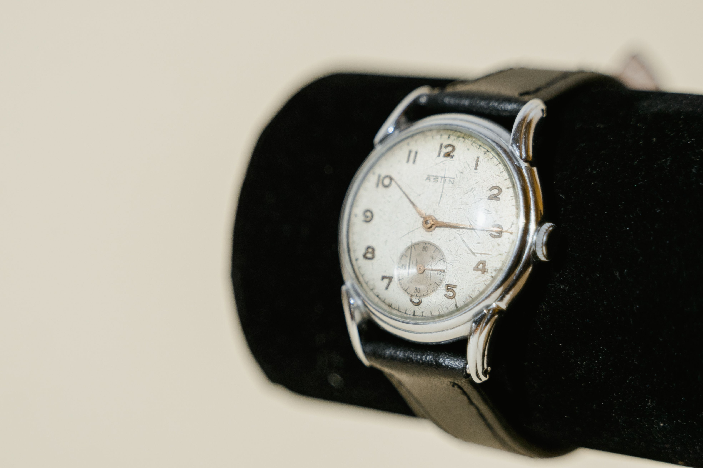

The Art of
Mechanical Perfection
Every vintage watch carries a unique history, a delicate heartbeat that has traversed generations. At VintageOne, we do not merely repair; we meticulously resurrect these mechanical marvels to their former glory.
Using traditional Swiss techniques inherited over decades, our master watchmakers fabricate impossible-to-find parts and perform micro-engineering with unwavering precision.
Discover Our HistoryOur Expertise
Comprehensive horological care tailored to the specific needs of rare and historically significant timepieces.
Movement Overhaul
Complete disassembly, ultrasonic cleaning, lubrication, and timing regulation to chronometer standards.
Learn MoreAesthetic Restoration
Sympathetic case polishing, precise laser welding for deep scratches, and period-correct finishing techniques.
Learn More
Dial & Hands Repair
Delicate dial cleaning, authentic luminous compound re-application, and thermal bluing of hands.
Learn MoreFeatured Restorations

1960s Chronograph
Full Overhaul
Pre-War Dress Watch
Aesthetic RecoveryThe Restoration Process
Diagnostic Evaluation
Comprehensive assessment of the movement, casing, and historical authenticity to map out the exact preservation strategy.
Meticulous Dismantling
The timepiece is carefully stripped down. Every microscopic gear, jewel, and spring is cataloged and ultrasonically cleansed.
Component Fabrication
Damaged parts are meticulously repaired or newly fabricated in-house by our master watchmakers using period-correct tools.
Reassembly & Regulation
The movement is reassembled, lubricated with modern synthetic oils, and rigorously regulated to chronometer standards over 14 days.
Swiss Certified
Master Horologists
Client Experiences
"The team at VintageOne brought my grandfather's completely rusted aviator watch back to perfect running condition. The attention to detail is staggering."
James W.
Collector
"They fabricated a balance staff that hasn't been produced since 1938. Absolute wizards of micro-engineering. I trust no one else with my collection."
Eleanor T.
Auctioneer
"From the initial inspection to the beautifully documented service booklet they provided upon completion, the entire process screams luxury."
Arthur H.
Horology Enthusiast
Let us revive your
timepiece.
Due to the meticulous nature of our work, we accept a limited number of commissions per month. Secure your consultation with our master watchmakers today.